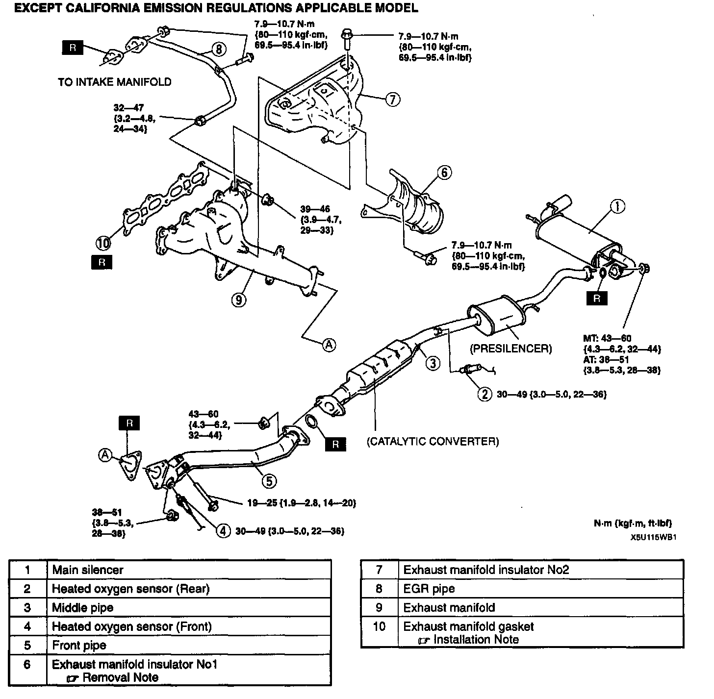
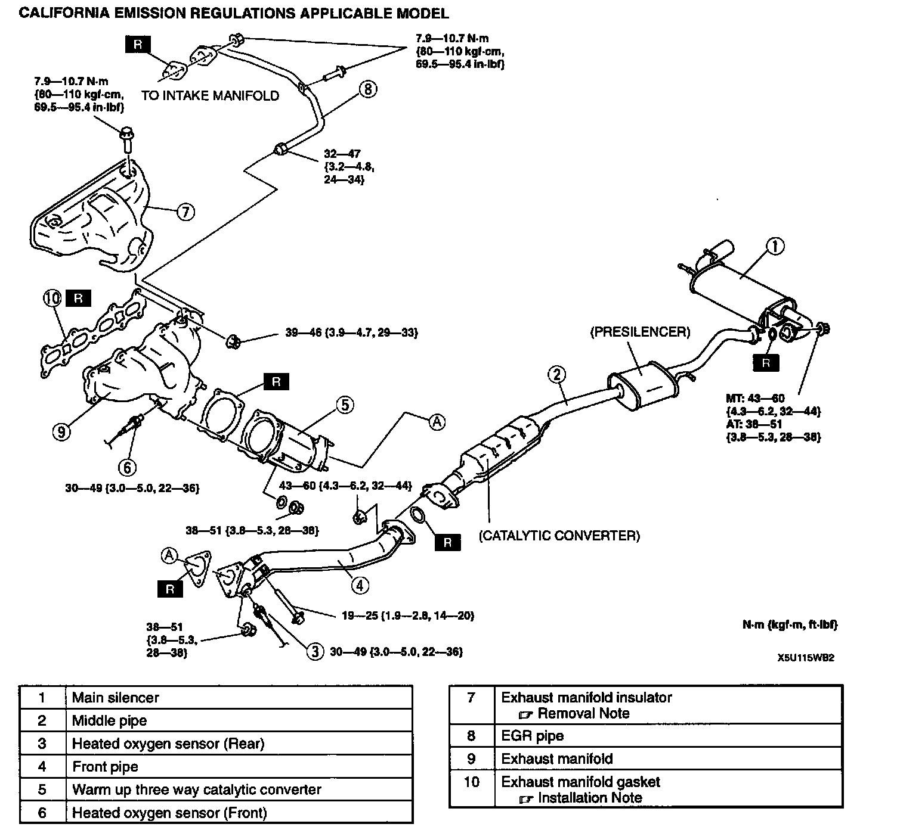
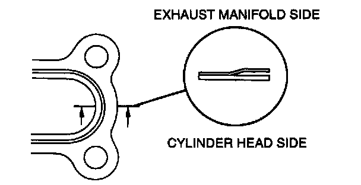

Exhaust System: Service and Repair


EXHAUST SYSTEM REMOVAL/INSTALLATION
Warning:
^ When the engine and exhaust system are hot, they can badly burn. Turn off the engine and wait until they are cool before removing or installing the exhaust system.
1. Disconnect the negative battery cable.
2. Remove in the order indicated in the table.
3. Install in the reverse order of removal.
Exhaust Manifold Insulator No.1, Exhaust Manifold Insulator Removal Note
^ Remove the windshield washer tank with the washer tank connector connected before removing the exhaust manifold insulator.
Exhaust Manifold Gasket Installation Note

^ To install the exhaust manifold gasket, make sure that the convex side of the gasket is faced to the exhaust manifold side.